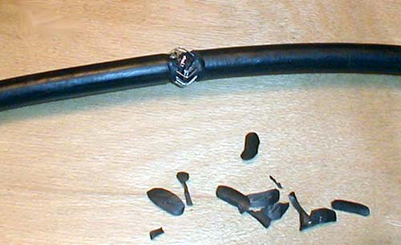

Тема №1. Полевые кабельные линии связи
Занятие №5. Ремонт полевых кабелей связи.
Литература:
1. Ремонт легких полевых кабелей связи.
Зачищаем провода на длине 10-12 сантиметров.
Отделяем медные жилы от стальных.
Медные отводим в сторону.
Стальные кладём крест на крест по их серединам.
Из стальных жил завязываем узел-петлю, тянем за их концы. При этом от изоляции до узла должно быть около 2 сантиметров.
Затягиваем крепкий узел. Концы стальных жил лягут почти вдоль провода.
Подтягиваем за провода в изоляции, окончательно затягиваем.
Медные жилы прикладываем вдоль провода, поверх узла, навстречу друг другу.
От узла по направлению к изоляции медными жилами поверх других начинаем обматывать практически до начала изоляции. Эти медные жилы с кабеля, который справа!
Тоже самое делаем с оставшимися жилами.
Обматываем ими медные и стальные жилы кабеля вплоть до изоляции.
Должно получиться как на фотографии.
Бокорезами удаляем оставшиеся концы стальных и медных жил.
Результат виден на фотографии.
Пропаиваем соединение с использованием канифоли. Активные флюсы нет необходимости применять, всё легко паяется и так.
Излишки канифоли удаляют, можно протереть и спиртом.
Получаем соединение, которое хорошо держит нагрузку «на разрыв» и обеспечивает качественный контакт. Далее лишь Ваше творчество по герметизации этого соединения.
Я предлагаю следующее:
- первоначально, перед пайкой надеваем на кабель П-274 (его одну жилу) трубку-термоусадку соответствующего диаметра.
- берём герметик, им промазываем место пайки и на 1 см вдоль изоляции.
- передвигаем трубочку на место соединения, поверх тонкого слоя герметика. Усаживаем трубку путём нагрева, удаляем излишки герметика с торцов. «Термоусадку» желательно поверх обмотать слоем изоленты. Громоздко? Нет, надёжно!
При соединении двух проводов кабеля предусмотрите то, что места соединения должны быть на некотором расстоянии друг от друга и не нарушайте количество витков на единицу длины кабеля.
2. Ремонт полевых кабелей дальней связи.
Для начала - кабель в исходном состоянии, что называется перед вскрытием. Ну и инструмент - нож с выдвигающимся лезвием (производство Китай) и бокорезы (Россия, но желательно использовать что-то получше).
Снятие внешней изоляции и стальной оплетки
Известно, что кабель П-296 имеет хорошую изоляцию и прочную стальную оплетку. Снять их - подчас не такая простая задача. Вот одна из промышленных методик:
Действие первое.
Надрезаем (состругиваем) пластиковую оболочку до стали по окружности кабеля на длину около 15 мм. Оставшийся "хвостик" может быть любым, но обычно достаточно 100-150 мм. Действовать ножом можно смело - прорезать стальную оплетку невозможно (вред только один - нож тупится).
В результате должно получиться нечто похожее:
Нужно следить, что бы на надрезе не осталось оболочки. Она будет мешать в дальнейшей работе, хотя и не сильно. Внизу видны кусочки - срезы внешней изоляции.
Действие второе.
Вращательным движение нужно сместить хвостик оболочки, и сдвинуть его в сторону надреза. При этом стальная оплетка приподнимется, и ее будет удобно "обкусывать" бокорезами.

Не торопясь, по одной-две проволоки "перекусить" бокорезами (или чем-то другим) всю оплетку. Постараться при этом не поранить пальцы об острые края.
Из-за этого (и для удобства дальнейшей работы) желательно оставлять проволочки со стороны кабеля как можно более маленькими.
Если нужно дотянуться до дальних проволок - кабель можно загнуть следующим образом:
Действие третье.
Далее все просто - нужно стянуть изоляцию вместе со стальной оплеткой как чулок. И выкинуть подальше от любопытных рук (или глаз).
Результат должен выглядеть следующим образом:
После этого можно переходить к следующей стадии - разделке проводников.
P.S. Существует еще одна методика, которая даже более удобна для кабеля П-270. Ее отличие - после надреза изоляция снимается без оплетки. Последняя расплетается и "обкусывается".
Недостаток - при разделке на большую длину снять отдельно изоляцию может оказаться сложно (для П-270 такой проблемы нет). Кроме того, в результате образуются весьма колючие проволочки, на которые можно впоследствии "наступить" в самом буквальном смысле этого слова.
Разделка центрального блока
Центральный блок П-296 представляет собой 4-ре многопроволочных проводника, свитых вокруг условного общего центра. Каждый провод имеет свою изоляцию, а вместе они объединены в один монолит дополнительной полиэтиленовой заливкой.
Так как полиэтилен индивидуальной и общей изоляции близки по свойствам, при изготовлении и хранении происходит их прочное соединение (сплавление). Соответственно, задача разделения проводников становится достаточно не простой.
Что бы не изорвать (буквально) руки остатками стального экрана, нужно обернуть место разреза оболочки несколькими слоями изоляционной ленты. Защита простая и надежная.
Так же не помешает скрутить экран в плотную косичку - не будет риска запутаться в нем, и привести этим в "нетоварный" вид.
После этого можно приступить к операциям по разделке проводников.
Если присмотреться к центральному блоку, хорошо видно, как по спирали идут проводники. Поэтому можно определить место, где делать надрез - в промежутке между "красной" и "белой" жилой.
Резать нужно аккуратно - соскользнувший нож может повредить окружающие предметы (в том числе руки, ноги, или другие выступающие части тела). Изолента на иллюстрации играет роль буфера.
Длина надреза может быть небольшой - достаточно получить "хвостики" для захвата плоскогубцами (т.е. 10-20 мм). Но я предпочитаю сделать разрез побольше, и обойтись без инструментов.
Надрез удобно делать с двух противоположных сторон, и в результате должно получиться нечто похожее на следующее изображение:
Далее остается только продолжить надрез. Проще всего это сделать разрыванием центрального блока. Как правило используются плоскогубцы, 2 шт., и помощник, 1 шт (вместо последнего можно удерживать кабель в удобном положении ногами, зубами, или дополнительным крепежом).
Но можно все сделать просто руками...
Независимо от способа, результат должен получиться следующим:
Длина разрыва не нормируется, лишь бы было удобно. Обычно достаточно 100-150 мм.
Остается повторить операции, разделяя получившиеся пары на отдельные проводники.
А разрывать совсем просто - тут плоскогубцы уже не понадобятся.
Разделанный на отдельные проводники П-296 показан ниже:
Часто не удается сделать первоначальные разрезы идеально ровно. Надрезаются отдельные проволоки, оголяется изоляция. Да и после захвата плоскогубцами вид не красивый...
Поэтому кончики настоятельно рекомендуется обрезать:
Остается любым привычным способом удалить изоляцию - и можно считать этап разделки законченным.
Разве что не помешает скрутить оголенные проводники между собой - это поможет избежать их случайного повреждения.
Итог должен получиться примерно следующий: